PLSQL编辑器用于编辑和执行存储过程和函数。
打开PLSQL编辑器,首先要成功建立连接，打开PLSQL编辑器方式有以下两种方法:
一. 在过程或函数节点中右键选择新建;
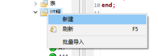
二. 在过程子节点或函数子节点中右键选择编辑或测试;
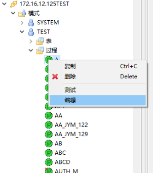
打开编辑界面,可以编辑对应的存储过程或函数语句,
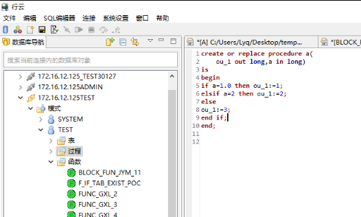
执行存储过程或函数需要以测试的方式打开，有两种执行方法:
一、工具栏中图标，
二、快捷键F1
执行结果如图所示:
执行中：
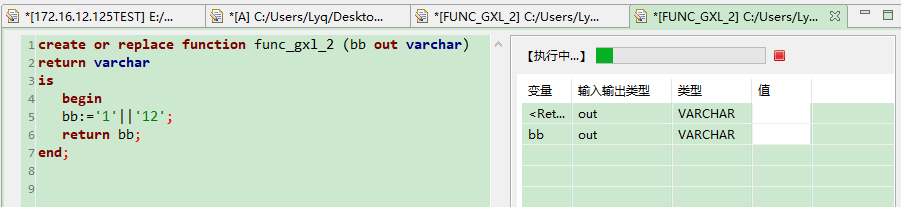
执行成功：
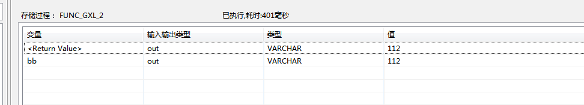
存储过程或函数保存或另存为有三种方法：
一、菜单中右击文件选择保存或另存为；
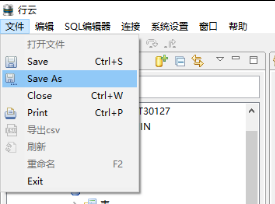
二、以编辑或新建方式打开PLSQL编辑器情况下，右键菜单选择”保存”选项；
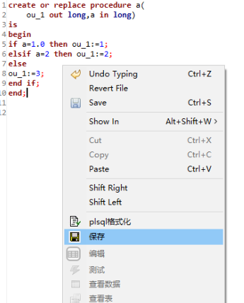
三、关闭当前选项卡时进行保存；
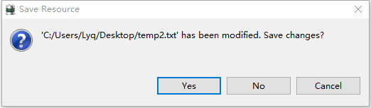
打印的入口为：菜单栏中的 “文件” 按钮中的 “打印”按钮：
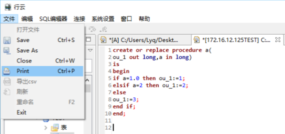
点击打印，会打印出编辑器中的PLSQL语句：
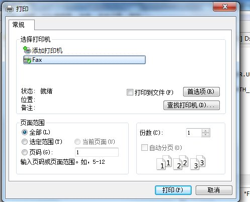
以编辑或新建方式打开PLSQL编辑器方式下，右键菜单中选择PLSQL格式化选项；
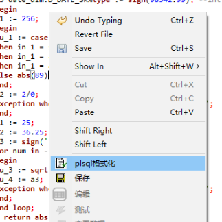
格式化前的语句排版如下:
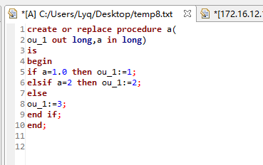
格式化后的语句排版如下:
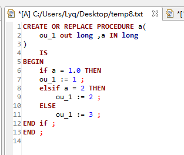
撤销入口在 菜单栏力的 “编辑” 中的 “撤销”，也可使用快捷键Ctrl+Z：
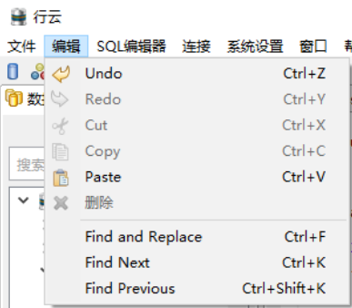
重做入口在 菜单栏力的 “编辑” 中的 “重做”，也可使用快捷键Ctrl+Y：
剪切入口在 菜单栏力的 “编辑” 中的 “剪切”，也可使用快捷键Ctrl+X：
复制入口在 菜单栏力的 “编辑” 中的 “复制”，也可使用快捷键Ctrl+C：
粘贴入口在 菜单栏力的 “编辑” 中的 “粘贴”，也可使用快捷键Ctrl+V：
查找并替换入口在 菜单栏力的 “编辑” 中的 “查找并替换”，也可使用快捷键Ctrl+F：
点击后会出现：
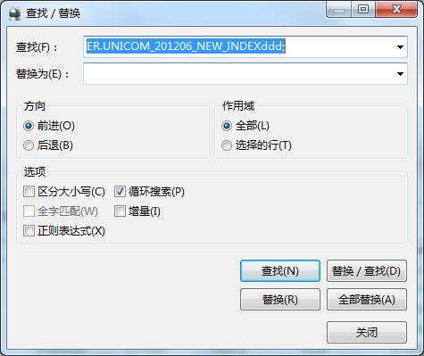
在 “查找(F):” 框中输入需要查找的字段，点击查找 ”(N)” 查询，
二、查询条件：
1、方向：
向前： 往当前对象之前查找
向后： 往当前对象之后查找
2、作用域：
全部：查询PLSQL编辑器中的所有字段
选择的行： 查询鼠标选中的字段
区分大小写：区分大小写
循环搜索：从当前对象查询到末尾，会重头查询
全字匹配：查找完全匹配的完整的词
增量：随着上面查找输入，会自动查找，比如先查a,输入a,编辑器找到a,再输入b,则查找到ab
正则匹配：通过正则表达式查询
三、替换：
在 “替换为(E)”框中输入替换为的字段，
点击 “替换(R)” ，替换当前地段，
点击 “替换/查找(D)” ，替换当前字段并查找下一个查找对象，
点击 “全部替换(A)”，替换所有匹配对象。
查找下一个入口在 菜单栏力的 “编辑” 中的 “查找下一个”，也可使用快捷键Ctrl+K：
查找上一个入口在 菜单栏力的 “编辑” 中的 “查找上一个”，也可使用快捷键Ctrl+Shift+K：